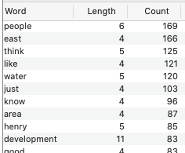
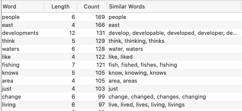
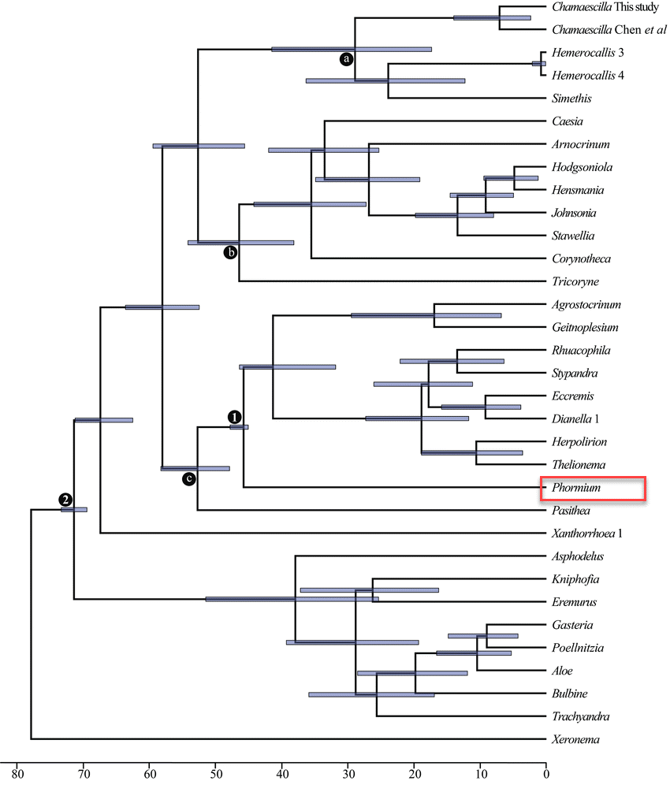
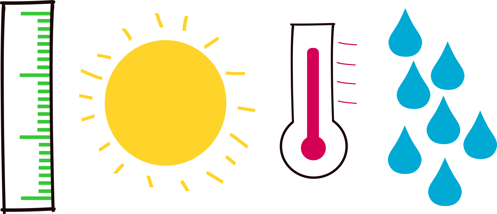

Text analysis: tools & approaches
Advanced Qualitative Methods, Mar 23, 2021
Jeremy Buhler, jeremy.buhler@ubc.ca
Mathew Vis-Dunbar, mathew.vis-dunbar@ubc.ca
Learning objectives
- Identify common text analysis techniques
- Understand sources of bias in automated analysis
- Use NVivo software for text coding and queries
Outline
| 0:00 | Initial questions |
| 0:10 | Text analysis techniques |
| 0:20 | Automated text analysis |
| 0:30 | Working with NLP libraries |
| 0:40 | Break |
| 0:45 | Orientation to NVivo |
| 1:00 | Coding and queries in NVivo |
| 1:30 | Questions and discussion |
Initial questions
What is your dataset?
What is your objective?
Manual or automated processes?
What is your dataset?
- size/extent
- format
- privacy/sensitivity
What is your objective?
- research questions
- type of analysis
- expected output
Manual or automated processing?
automated: machine learning, algorithms
manual: computer-assisted, but more directly involved
Text analysis techniques
- Word frequency
- Collocation
- Concordance
- Text extraction
- Text classification
Word frequency
Word frequency with stemming
Collocation
...there's some concern that development happen in a way that still protects the environment water quality. Hopefully development is gonna start to become...
...one of the highest producing water bodies in North Carolina is because there isn't that much development. And so you know, I...
Concordance

Text extraction
- Keywords
- Named entities
- people
- places
- organizations
- ...
Text classification
- Sentiment
- Action
- Activity
- Belief
- Emotion
- Issues
- ...
Creatures of Classification
Implications of classifications

Genetic lineage

Harakeke

Horticulture

Questions
- Context of creation
- Human identified patterns
- Machine identified patterns
- Degree of intervention
Natural Language Processing Toolkits
Functions, lexicons, and algorithms.
Breaking down text
Because I could not stop for Death -,
He kindly stopped for me -,
The Carriage held but just Ourselves -,
and Immortality
| Line | Sentence |
|---|---|
| 1 | Because I could not stop for Death - |
| 2 | He kindly stopped for me - |
| 3 | The Carriage held but just Ourselves - |
| 4 | and Immortality |
| Line | Word |
|---|---|
| 1 | because |
| 1 | i |
| 1 | could |
| 1 | not |
| 1 | stop |
| 1 | for |
| 1 | death |
| 2 | he |
| 2 | kindly |
| 2 | stopped |
Patterns
| Year | Candidate | Won (W) or Lost (L) the Popular Vote | Number of 'will', 'shall', 'going to' |
|---|---|---|---|
| 1960 | Kennedy | W | 163 |
| 1960 | Nixon | L | 122 |
| 1976 | Carter | W | 68 |
| 1976 | Ford | L | 32 |
| 1980 | Reagan | W | 19 |
| 1980 | Carter | L | 18 |
| … | … | … | … |
Complex algorithms
- Rules of grammar
- Lexicons of sentiment correlation
- Document structures or genres
- Machine detected patterns
The problem
I have a tear...
I have a tear...
in my pants.
Hermans, F. (January 25, 2019). Explicit Direct Instruction in Programming Education. [Talk]. https://rstudio.com/resources/rstudioconf-2019/explicit-direct-instruction-in-programming-education/
The needed outcome
Text: ... The thieves stole the paintings. They were subsequently sold. ...
Human: Who or what was sold?
Machine: The paintings.
Bird, S., Klein, E., & Loper, E. (2009).
Examples
- NLTK
- spaCy
- StanfordCoreNLP
- CogCompNLP
- MALLET (MAchine Learning for LanguagE Toolkit)
Hands-on practice with NVivo
For NVivo and QDA resources see
https://ubc-library-rc.github.io/nvivo1/
NVivo alternatives
- ATLAS.ti - similar features, also not free
- Taguette - for tagging/coding only, open source
NVivo demo